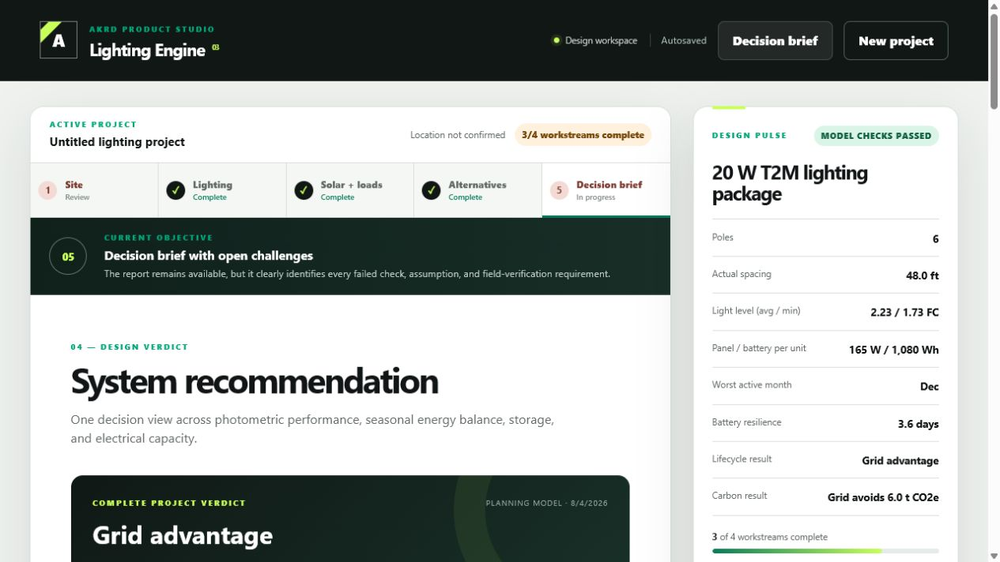
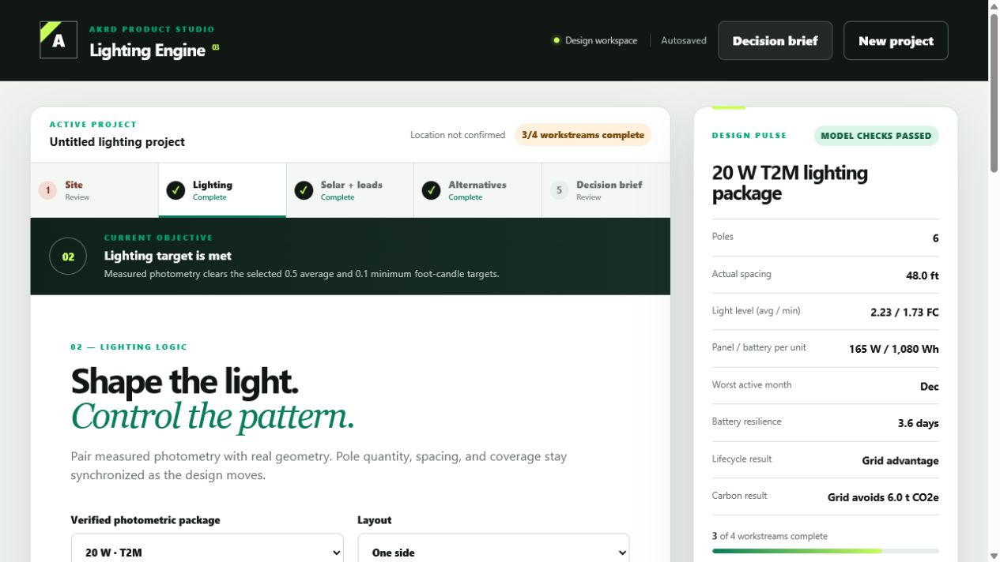
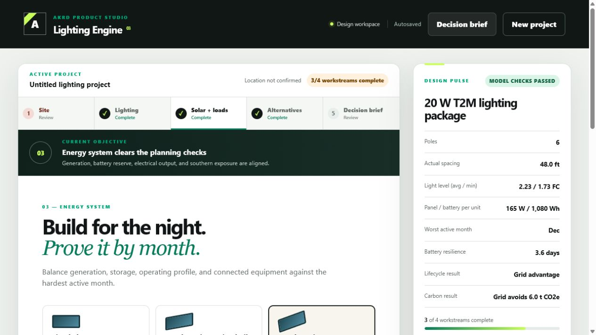
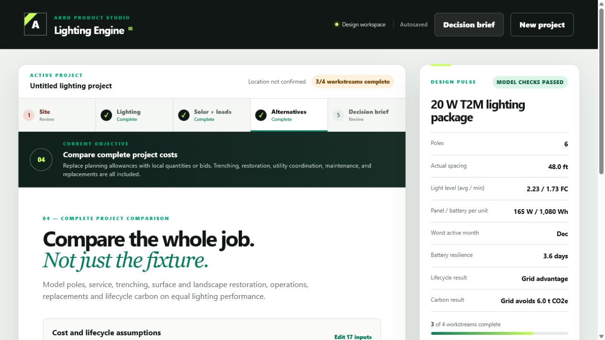
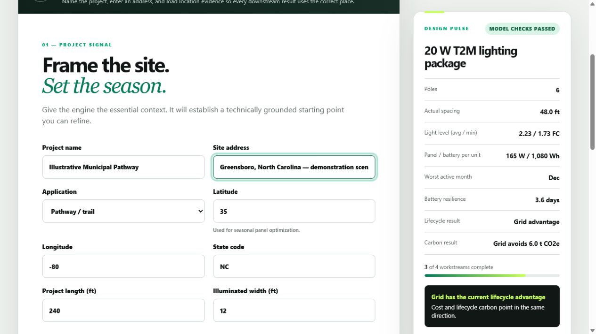

Measured lighting files indexed across 12 wattages and six distribution patterns
AKRD product case story / Technical decision support
Most relevant if: a technical recommendation depends on disconnected calculations, assumptions, and vendor information
Turn a lighting concept into a decision someone can defend.
The Lighting Engine connects measured light distribution, pole layout, seasonal solar production, battery reserve, auxiliary equipment, civil costs, maintenance, carbon, and uncertainty in one guided planning path. The result is not a prettier calculator. It is a clearer way to decide what deserves engineering, budget, and procurement attention.
Field experience showed where infrastructure decisions break down. The Lighting Engine turns those lessons into a repeatable system for making better technical decisions.
Working private product · AKRD-built, not a client engagement · Planning model, not stamped engineering
- 01SiteDefine the place and operating need
- 02LightTest measured fixture performance
- 03EnergySize solar, battery, and added loads
- 04AlternativesCompare grid and solar over time
- 05DecisionShow the recommendation and its limits
DECISION STANDARDLight · Energy · Cost · CarbonEvidence and uncertainty stay visible
Solar production and operating demand compared across the selected season
Lighting, worst-month energy, lifecycle cost, and lifecycle carbon checked independently
Civil-cost sensitivity shows whether the recommendation survives cost uncertainty
Plain-language guide
What the technical terms mean for the buyer.
The detail remains available, but a buyer should not need a lighting or electrical background to understand why each check matters.
- Measured lighting file
- A standardized laboratory file describing where a specific fixture sends light. It is stronger evidence than estimating from wattage alone.
- Photometric result
- A calculation of how much light reaches different points on the planned site, including average and minimum coverage.
- Worst-month energy
- The operating month with the least favorable balance between available sunlight and the energy the system must supply.
- Lifecycle cost
- The estimated cost to build, operate, maintain, restore, and replace major components over the selected analysis period.
- Truth ledger
- A record showing which inputs were measured, externally sourced, assumed, entered by the user, or calculated by the model.
- Planning model
- A tool for comparing options and exposing risks before final design. It does not replace a licensed professional or final manufacturer approval.
See the product think
Five connected screens turn a concept into an inspectable recommendation.
This walkthrough uses an illustrative municipal-pathway scenario. It demonstrates how the working product tests the same proposal across site context, measured light, worst-month energy, whole-project cost, and the final decision brief. It does not represent a customer result or final engineering.
The decision problem
A product can look feasible while the full project is still unproven.
A fixture may produce enough light. A solar panel may generate enough energy on an average day. A grid estimate may omit trench restoration, traffic control, landscaping, service charges, or maintenance. Each answer can be individually plausible while the overall recommendation remains incomplete.
The useful question is not “Can this product work?” It is “Does this complete project remain defensible when performance, season, cost, carbon, and uncertainty are tested together?”
Built from field experience
Solar infrastructure work revealed the gaps this product is designed to close.
After helping move solar-lighting opportunities through public-sector buying processes and into parks, pathways, transit, and municipal environments, Andrew saw a recurring problem: a promising product could reach a buyer before the complete project had been tested as one connected system.
Real sites add real constraints
A fixture and solar package must still respond to the location, operating schedule, seasonal sunlight, pole layout, civil conditions, maintenance needs, and equipment attached to the system.
Public decisions require understandable evidence
Government and institutional buyers need more than a product claim. They need assumptions, alternatives, risks, lifecycle implications, and the limits of the recommendation organized for review.
The product keeps the decision connected
The Lighting Engine carries the same project context through lighting, energy, cost, carbon, and evidence checks so the recommendation does not lose meaning between teams or files.
The method reaches beyond solar
Any business with expertise scattered across spreadsheets, product files, proposals, calculators, and employee knowledge can use the same approach to build a clearer customer decision path.
This product reflects commercial, public-sector, and field-learning experience. Its planning outputs support earlier decisions and handoffs; they do not replace licensed engineering, manufacturer approval, or site-specific final design.
One connected planning path
Make each decision earn the right to move forward.
The workflow carries the same site, fixture, operating schedule, cost assumptions, and evidence through every stage instead of rebuilding context in separate calculators and files.
- 01 / SITE
Define the place
Capture the application, dimensions, operating season, location, and planned pole geometry.
- 02 / LIGHTING
Prove the coverage
Use the selected measured fixture file to calculate point-by-point light levels and actual pole spacing.
- 03 / ENERGY
Protect the worst month
Test lighting schedules, solar orientation, shade, battery reserve, and connected equipment together.
- 04 / ALTERNATIVES
Compare complete projects
Put solar and grid options on equal lighting performance, including civil work, service, maintenance, restoration, and replacement.
- 05 / DECISION
Show the case and the limits
Summarize the four tests, sensitivity, material challenges, evidence classes, and required professional confirmation.
Four independent tests
A strong answer in one category cannot hide a failure in another.
The engine keeps the tests separate so an attractive cost result cannot disguise insufficient light, weak winter energy, or a carbon tradeoff.
Lighting performance
Do the average and minimum calculated light levels meet the planning targets with the selected fixture and pole layout?
Worst-month energy
Can the panel, battery, controller, lighting schedule, and added equipment meet demand during the least favorable active month?
Lifecycle cost
Which option has the lower modeled cost after construction, restoration, service, energy, maintenance, and battery replacement?
Lifecycle carbon
How do grid electricity, construction, solar equipment, battery replacement, and maintenance affect the long-term carbon comparison?
What makes the recommendation inspectable
The engine shows what it knows, what it assumes, and what still requires confirmation.
Every project output depends on input quality. The system protects the decision by keeping evidence type, confidence, source, sensitivity, and professional-review boundaries visible.
ControlWhat it preventsWhat the buyer gains
Exact lighting-file registryTreating another wattage or distribution as measured performanceTraceable fixture evidence
Truth ledgerMixing facts, assumptions, and model outputs togetherA claim-by-claim audit trail
Cost sensitivityAllowing one uncertain civil estimate to decide the recommendationA sturdier comparison
Material challengesHiding a risk because other tests passedA visible reason to pause or verify
Professional-review boundaryPresenting planning output as final engineeringA safer handoff into design and procurement
Inside the working product
Each screen answers a question the buyer must resolve.
These Playwright-captured screens use illustrative planning inputs. The values show working model behavior—not verified site data, customer savings, a construction recommendation, or stamped engineering.
05 / DECISION BRIEFWhat should move forward—and why?

02 / MEASURED LIGHTWill the planned layout provide usable coverage?

03 / WORST MONTHCan the energy system carry the real operating load?

04 / COMPLETE PROJECTWhich alternative holds up after the hidden costs appear?

01 / SITE CONTEXTWhat place, season, and operating need are we solving for?

What this demonstrates for a customer
The product is about lighting. The transferable service is building a better technical decision.
AKRD can apply the same approach when a business, agency, or technical team needs to combine specialist data, commercial assumptions, operating constraints, and risk into a tool buyers and reviewers can understand.
Turn specialist inputs into a usable workflow
Organize technical files, rules, options, and field assumptions around the decisions the user must make.
Keep performance and economics together
Prevent a recommendation from losing context as it moves between engineering, sales, operations, finance, and procurement.
Make tradeoffs visible to non-specialists
Give decision-makers a plain-language view without removing the technical evidence experts need to inspect.
Build limits into the product
Label assumptions, protect credentials, preserve sources, and state clearly where licensed or manufacturer confirmation begins.
Build the decision, not another disconnected calculator
What technical choice does your customer struggle to evaluate?
If your team depends on scattered calculations, product files, assumptions, and manual comparisons, AKRD can help turn that expertise into a clearer planning and decision-support system.
Talk about a decision-support tool See digital systems services